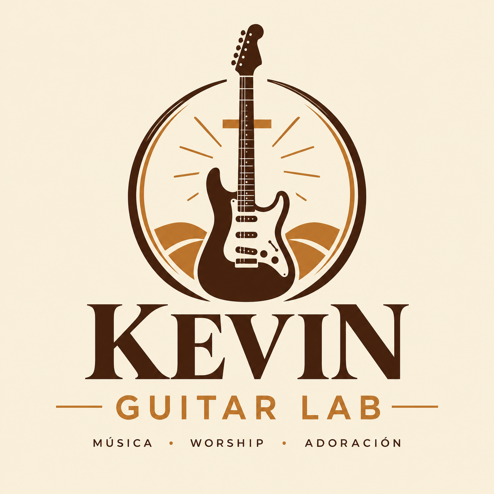
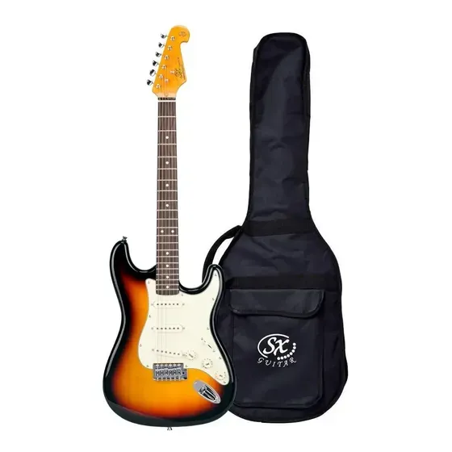
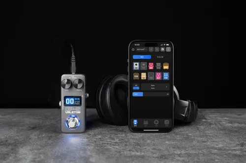
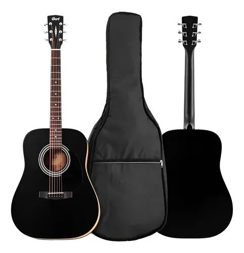

Sonidos ambientales
El delay y la reverb pueden crear profundidad y acompañar los momentos más tranquilos de una canción.

Un espacio dedicado a la guitarra, la música worship y la adoración a Dios.
Acá comparto mi historia como guitarrista, mis covers y el equipo que utilizo para encontrar diferentes sonidos.
Mi camino con la guitarra combina el aprendizaje personal y la experiencia de tocar en la iglesia.
Como cristiano, encuentro en la música una forma de expresar mi fe y poner mis habilidades al servicio de la adoración. Cada canción es una oportunidad para seguir aprendiendo, crecer como músico y compartir lo que me apasiona.
La música worship me permite explorar diferentes sonidos y acompañar momentos de adoración. Me gusta experimentar con melodías limpias, efectos ambientales y sonidos más intensos según lo que necesita cada canción.
En este espacio voy a compartir canciones que me inspiran, ideas musicales y, más adelante, mis propios covers.
Video de referencia e inspiración musical.
Algunos de los sonidos y recursos musicales que me gusta explorar al tocar worship.
El delay y la reverb pueden crear profundidad y acompañar los momentos más tranquilos de una canción.
Las melodías sencillas y los arpegios permiten acompañar sin ocupar todo el espacio musical.
Los sonidos más potentes aportan energía en las partes intensas, según el estilo de la canción.
Estos son algunos de los elementos que forman parte de mi sonido para tocar guitarra, practicar y acompañar momentos de adoración.

Mi guitarra para explorar diferentes sonidos, tocar melodías y acompañar canciones worship.

Mi pedal multiefectos para experimentar con diferentes tonos y construir sonidos según lo que necesita cada canción.

Mi guitarra electroacústica para explorar sonidos acústicos, acompañar canciones de adoración y disfrutar de arreglos más íntimos y melódicos.
¿También te gusta la guitarra o la música worship? Escribime para compartir ideas, experiencias y consultas musicales.